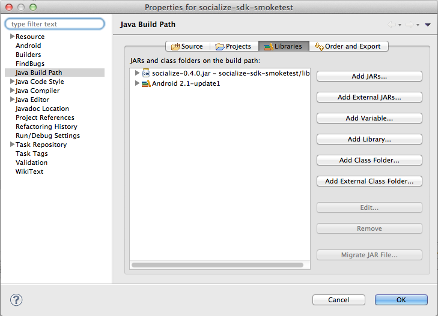

Getting Started¶
Introduction¶
Socialize is a drop-in social platform for iOS and Android which allows developers to add social features to their app in a matter of minutes.
What’s New¶
If you’re a Socialize veteran, check out our What’s New section for latest updates.
5 Steps to Using Socialize¶
1. Install the SDK¶
The Socialize SDK is delivered as a single JAR file, simply copy the socialize-x.x.x.jar file from the dist folder to the libs path of your Android project.
If you’re using eclipse, you’ll need to add the socialize-x.x.x.jar as a referenced library:
Note
Applications targeting older versions of Android (1.6 and below)**
Socialize does not support Android versions below v2.1-update1
2. Set up your Socialize Keys¶
Once you have registered on the GetSocialize.com website and created an application, you will have been given two “oAuth” authentication keys. A “consumer key”, and a “consumer secret”.
The recommended, and simples way to authenticate with Socialize is to create a configuration file in the assets path of your project called socialize.properties

Within this file, enter your Socialize consumer key and secret:
# Socialize App Key and Secret socialize.consumer.key=00000000-0000-0000-000000000000 socialize.consumer.secret=00000000-0000-0000-000000000000
(Replace 00000000-0000-0000-000000000000 with your key/secret from your Socialize account)
3. Configure your AndroidManifest.xml¶
Add the following lines to your AndroidManifest.xml under the <application...> element
<manifest...>
<application...>
<!-- Base Activities Required by Socialize -->
<activity android:name="com.socialize.ui.comment.CommentActivity"/>
<activity android:name="com.socialize.ui.action.ActionDetailActivity"/>
<activity android:name="com.socialize.ui.profile.ProfileActivity"/>
<activity android:name="com.socialize.auth.facebook.FacebookActivity"/>
<activity android:name="com.socialize.ui.SocializeLaunchActivity" android:launchMode="singleTop"/>
</application>
</manifest>
Add the following lines to your AndroidManifest.xml under the <manifest...> element
<manifest...>
<application.../>
<uses-permission android:name="android.permission.INTERNET"/>
<!-- Optional but recommended -->
<uses-permission android:name="android.permission.READ_PHONE_STATE" />
<!-- Optionally add ONE of the following to include location data in comments -->
<uses-permission android:name="android.permission.ACCESS_COARSE_LOCATION"/>
<uses-permission android:name="android.permission.ACCESS_FINE_LOCATION"/>
</manifest>
4. Configure Facebook Integration (Optional)¶
It is strongly recommended that users be able to authenticate with Facebook when using Socialize so as to maximize the exposure and promotion of your app.
This provides significant benefits to both your application and your users including:
- Improved user experience through personalized comments
- Automatic profile creation (user name and profile picture)
- Ability to automatically post user comments and likes to Facebook
- Promotes your app on Facebook by associating your app with comments
To add Facebook authentication, you’ll need a Facebook App ID.
If you already have a Facebook app, you can skip this section, otherwise refer to Facebook Integration for more information.
Once you have your facebook app ID, you can add it to the socialize.properties config file:
# Socialize App Key and Secret socialize.consumer.key=00000000-0000-0000-000000000000 socialize.consumer.secret=00000000-0000-0000-000000000000 # Facebook App ID facebook.app.id=1234567890
5. Include Socialize in your App!¶
Now that you have your environment all setup, it’s time to include Socialize.
The core component of the Socialize SDK is the “Action Bar”

This is a general purpose toolbar that sits at the bottom of your app and provides a central “one-stop-shop” of social features for your users.
Each Action Bar instance in your app is bound to an Entity. An Entity is simply an item of content in your app. Each Socialize action (comment, share, like etc.) is associated with an Entity.
An entity can be any item of content like a website, photo or person but MUST be given a unique key within your app.
It is not necessary to explicitly create an Entity object when rendering the Action bar as this will be done for you, however entities can be created manually.
Note
Refer to the Entities section for details on creating entities directly using the SDK.
The Action Bar is designed to automatically “pin” iteself to the bottom of your view. Adding the Action Bar to your app is done with a simple call to showActionBar from the SocializeUI instance:
import android.app.Activity;
import android.os.Bundle;
import android.view.View;
import com.socialize.Socialize;
import com.socialize.entity.Entity;
public class SampleActionBarActivity extends Activity {
public void onCreate(Bundle savedInstanceState) {
super.onCreate(savedInstanceState);
// Your entity key. May be passed as a Bundle parameter to your activity
String entityKey = "http://www.getsocialize.com";
// Create an entity object including a name
// The Entity object is Serializable, so you could also store the whole object in the Intent
Entity entity = Entity.newInstance(entityKey, "Socialize");
// Wrap your existing view with the action bar.
// your_layout refers to the resource ID of your current layout.
View actionBarWrapped = Socialize.getSocializeUI().showActionBar(this, R.layout.your_layout, entity);
// Now set the view for your activity to be the wrapped view.
setContentView(actionBarWrapped);
}
}
Next Steps...¶
Visit your App dashboard on the Socialize website to enable additional features like SmartAlerts.